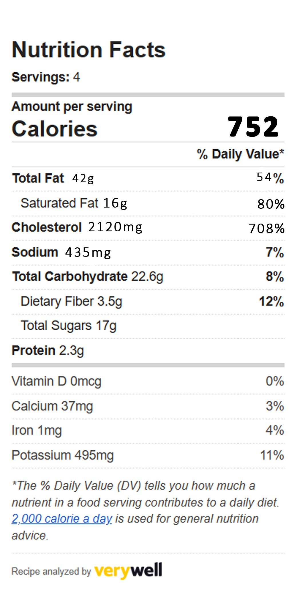

GRILLED
BALUTWITH MANGO SALSA
Yield:5 Servings
Prep Time:10 minutes
Cooking Time:10 minutes
Total Time:20 minutes
Description
Grilled Balut is a delicious appetizer that is famous among Filipinos. It is ideal for preparing the
recipe
with mango salsa as it makes the recipe healthier by boosting the fiber and carbohydrate content.
Mango contains calcium, minerals, and Vitamins A and C, and it is low in carbs and fat.
Notes & Tips
Plate it in a bowl together with the mango salsa. The mango salsa will counterbalance the savory and
heaviness of the grilled balut. Nutrition-wise, salsa will boost the fiber and carbohydrate contents of the
meal.
Made Healthier

The base recipe of grilled balut is high in cholesterol and fat which can lead to heart disease. Excessive
intake of this recipe can increase unintended weight gain.